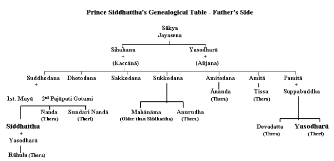
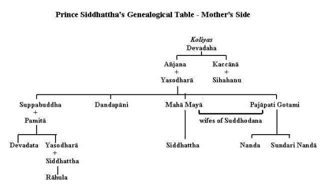

| BuddhaSasana Home Page | English Section |
THE BUDDHA AND HIS TEACHINGS
Venerable Nārada Mahāthera
|
THE BUDDHA CHAPTER I FROM BIRTH TO RENUNCIATION
Birth On the full moon day of May,[1] in the year 623 B.C.[2] there was born in the Lumbini Park [3] at Kapilavatthu,[4] on the Indian borders of present Nepal, a noble prince who was destined to be the greatest religious teacher of the world. His father[5] was King Suddhodana of the aristocratic Sākya [6] clan and his mother was Queen Mahā Māyā. As the beloved mother died seven days after his birth, Mahā Pajāpati Gotami, her younger sister, who was also married to the King, adopted the child, entrusting her own son, Nanda, to the care of the nurses. Great were the rejoicings of the people over the birth of this illustrious prince. An ascetic of high spiritual attainments, named Asita, also known as Kāladevala, was particularly pleased to hear this happy news, and being a tutor of the King, visited the palace to see the Royal babe. The King, who felt honoured by his unexpected visit, carried the child up to him in order to make the child pay him due reverence, but, to the surprise of all, the child's legs turned and rested on the matted locks of the ascetic. Instantly, the ascetic rose from his seat and, foreseeing with his supernormal vision the child's future greatness, saluted him with clasped hands.[7] The Royal father did likewise. The great ascetic smiled at first and then was sad. Questioned regarding his mingled feelings, he answered that he smiled because the prince would eventually become a Buddha, an Enlightened One, and he was sad because he would not be able to benefit by the superior wisdom of the Enlightened One owing to his prior death and rebirth in a Formless Plane (Arūpaloka).[8] Naming Ceremony On the fifth day after the prince's birth he was named Siddhattha which means "wish fulfilled". His family name was Gotama.[9] In accordance with the ancient Indian custom many learned brahmins were invited to the palace for the naming ceremony. Amongst them there were eight distinguished men. Examining the characteristic marks of the child, seven of them raised two fingers each, indicative of two alternative possibilities, and said that he would either become a Universal Monarch or a Buddha. But the youngest, Kondañña,[10] who excelled others in wisdom, noticing the hair on the forehead turned to the right, raised only one finger and convincingly declared that the prince would definitely retire from the world and become a Buddha. Ploughing Festival A very remarkable incident took place in his childhood. It was an unprecedented spiritual experience which, later, during his search after truth, served as a key to his Enlightenment.[11] To promote agriculture, the King arranged for a ploughing festival. It was indeed a festive occasion for all, as both nobles and commoners decked in their best attire, participated in the ceremony. On the appointed day, the King, accompanied by his courtiers, went to the field, taking with him the young prince together with the nurses. Placing the child on a screened and canopied couch under the cool shade of a solitary rose-apple tree to be watched by the nurses, the King participated in the ploughing festival. When the festival was at its height of gaiety the nurses too stole away from the prince's presence to catch a glimpse of the wonderful spectacle. In striking contrast to the mirth and merriment of the festival it was all calm and quiet under the rose-apple tree. All the conditions conducive to quiet meditation being there, the pensive child, young in years but old in wisdom, sat cross-legged and seized the opportunity to commence that all-important practice of intent concentration on the breath -- on exhalations and inhalations -- which gained for him then and there that one pointedness of mind known as Samādhi and he thus developed the First Jhāna [12] (Ecstasy). The child's nurses, who had abandoned their precious charge to enjoy themselves at the festival, suddenly realizing their duty, hastened to the child and were amazed to see him sitting cross-legged plunged in deep meditation. The King hearing of it, hurried to the spot and, seeing the child in meditative posture, saluted him, saying -- "This, dear child, is my second obeisance". Education As a Royal child, Prince Siddhattha must have received an education that became a prince although no details are given about it. As a scion of the warrior race he received special training in the art of warfare. Married Life At the early age of sixteen, he married his beautiful cousin Princess Yasodharā [13] who was of equal age. For nearly thirteen years, after his happy marriage, he led a luxurious life, blissfully ignorant of the vicissitudes of life outside the palace gates. Of his luxurious life as prince, he states: "I was delicate, excessively delicate. In my father's dwelling three lotus-ponds were made purposely for me. Blue lotuses bloomed in one, red in another, and white in another. I used no sandal-wood that was not of Kāsi.[14] My turban, tunic, dress and cloak, were all from Kāsi. "Night and day a white parasol was held over me so that I might not be touched by heat or cold, dust, leaves or dew. "There were three palaces built for me -- one for the cold season, one for the hot season, and one for the rainy season. During the four rainy months, I lived in the palace for the rainy season without ever coming down from it, entertained all the while by female musicians. Just as, in the houses of others, food from the husks of rice together with sour gruel is given to the slaves and workmen, even so, in my father's dwelling, food with rice and meat was given to the slaves and workmen.[15]" With the march of time, truth gradually dawned upon him. His contemplative nature and boundless compassion did not permit him to spend his time in the mere enjoyment of the fleeting pleasures of the Royal palace. He knew no personal grief but he felt a deep pity for suffering humanity. Amidst comfort and prosperity, he realized the universality of sorrow. Renunciation Prince Siddhattha reflected thus: "Why do I, being subject to birth, decay, disease, death, sorrow and impurities, thus search after things of like nature. How, if I, who am subject to things of such nature, realize their disadvantages and seek after the unattained, unsurpassed, perfect security which is Nibbāna![16]" "Cramped and confined is household life, a den of dust, but the life of the homeless one is as the open air of heaven! Hard is it for him who bides at home to live out as it should be lived the Holy Life in all its perfection, in all its purity.[17]" One glorious day as he went out of the palace to the pleasure park to see the world outside, he came in direct contact with the stark realities of life. Within the narrow confines of the palace he saw only the rosy side of life, but the dark side, the common lot of mankind, was purposely veiled from him. What was mentally conceived, he, for the first time, vividly saw in reality. On his way to the park his observant eyes met the strange sights of a decrepit old man, a diseased person, a corpse and a dignified hermit.[18] The first three sights convincingly proved to him, the inexorable nature of life, and the universal ailment of humanity. The fourth signified the means to overcome the ills of life and to attain calm and peace. These four unexpected sights served to increase the urge in him to loathe and renounce the world. Realizing the worthlessness of sensual pleasures, so highly prized by the worldling, and appreciating the value of renunciation in which the wise seek delight, he decided to leave the world in search of Truth and Eternal Peace. When this final decision was taken after much deliberation, the news of the birth of a son was conveyed to him while he was about to leave the park. Contrary to expectations, he was not overjoyed, but regarded his first and only offspring as an impediment. An ordinary father would have welcomed the joyful tidings, but Prince Siddhattha, the extraordinary father as he was, exclaimed --"An impediment (rāhu) has been born; a fetter has arisen". The infant son was accordingly named Rāhula [19] by his grandfather. The palace was no longer a congenial place to the contemplative Prince Siddhattha. Neither his charming young wife nor his lovable infant son could deter him from altering the decision he had taken to renounce the world. He was destined to play an infinitely more important and beneficial role than a dutiful husband and father or even as a king of kings. The allurements of the palace were no more cherished objects of delight to him. Time was ripe to depart. He ordered his favourite charioteer Channa to saddle the horse Kanthaka, and went to the suite of apartments occupied by the princess. Opening the door of the chamber, he stood on the threshold and cast his dispassionate glance on the wife and child who were fast asleep. Great was his compassion for the two dear ones at this parting moment. Greater was his compassion for suffering humanity. He was not worried about the future worldly happiness and comfort of the mother and child as they had everything in abundance and were well protected. It was not that he loved them the less, but he loved humanity more. Leaving all behind, he stole away with a light heart from the palace at midnight, and rode into the dark, attended only by his loyal charioteer. Alone and penniless he set out in search of Truth and Peace. Thus did he renounce the world. It was not the renunciation of an old man who has had his fill of worldly life. It was not the renunciation of a poor man who had nothing to leave behind. It was the renunciation of a prince in the full bloom of youth and in the plenitude of wealth and prosperity -- a renunciation unparalleled in history. It was in his twenty-ninth year that Prince Siddhattha made this historic journey. He journeyed far and, crossing the river Anomā, rested on its banks. Here he shaved his hair and beard and handing over his garments and ornaments to Channa with instructions to return to the palace, assumed the simple yellow garb of an ascetic and led a life of voluntary poverty. The ascetic Siddhattha, who once lived in the lap of luxury, now became a penniless wanderer, living on what little the charitably-minded gave of their own accord. He had no permanent abode. A shady tree or a lonely cave sheltered him by day or night. Bare-footed and bare-headed, he walked in the scorching sun and in the piercing cold. With no possessions to call his own, but a bowl to collect his food and robes just sufficient to cover the body, he concentrated all his energies on the quest of Truth. Search Thus as a wanderer, a seeker after what is good, searching for the unsurpassed Peace, he approached Ālāra Kālāma, a distinguished ascetic, and said: "I desire, friend Kālāma to lead the Holy Life in this Dispensation of yours." Thereupon Ālāra Kālāma told him: "You may stay with me, 0 Venerable One. Of such sort is this teaching that an intelligent man before long may realize by his own intuitive wisdom his master's doctrine, and abide in the attainment thereof." Before long, he learnt his doctrine, but it brought him no realization of the highest Truth. Then there came to him the thought: When Ālāra Kalāma declared: "Having myself realized by intuitive knowledge the doctrine, I -- 'abide in the attainment thereof --' it could not have been a mere profession of faith; surely Ālāra Kālāma lives having understood and perceived this doctrine." So he went to him and said "How far, friend Kālāma, does this doctrine extend which you yourself have with intuitive wisdom realized and attained?" Upon this Ālāra Kālāma made known to him the Realm of Nothingness (Ākiñcaññāyatana),[20] an advanced stage of Concentration. Then it occurred to him: "Not only in Ālāra Kālāma are to be found faith, energy, mindfulness, concentration, and wisdom. I too possess these virtues. How now if I strive to realize that doctrine whereof Ālāra Kālāma says that he himself has realized and abides in the attainment thereof!" So, before long, he realized by his own intuitive wisdom that doctrine and attained to that state, but it brought him no realization of the highest Truth. Then he approached Ālāra Kālāma and said: "Is this the full extent, friend Kālāma, of this doctrine of which you say that you yourself have realized by your wisdom and abide in the attainment thereof?" "But I also, friend, have realized thus far in this doctrine, and abide in the attainment thereof." The unenvious teacher was delighted to hear of the success of his distinguished pupil. He honoured him by placing him on a perfect level with himself and admiringly said: "Happy, friend, are we, extremely happy; in that we look upon such a venerable fellow-ascetic like you! That same doctrine which I myself have realized by my wisdom and proclaim, having attained thereunto, have you yourself realized by your wisdom and abide in the attainment thereof; and that doctrine you yourself have realized by your wisdom and abide in the attainment thereof, that have I myself realized by my wisdom and proclaim, having attained thereunto. Thus the doctrine which I know, and also do you know; and, the doctrine which you know, that I know also. As I am, so are you; as you are, so am I. Come, friend, let both of us lead the company of ascetics." The ascetic Gotama was not satisfied with a discipline and a doctrine which only led to a high degree of mental concentration, but did not lead to "disgust, detachment, cessation (of suffering), tranquillity; intuition, enlighten-ment, and Nibbāna." Nor was he anxious to lead a company of ascetics even with the co-operation of another generous teacher of equal spiritual attainment, without first perfecting himself. It was, he felt, a case of the blind leading the blind. Dissatisfied with his teaching, he politely took his leave from him. In those happy days when there were no political disturbances the intellectuals of India were preoccupied with the study and exposition of some religious system or other. All facilities were provided for those more spiritually inclined to lead holy lives in solitude in accordance with their temperaments and most of these teachers had large followings of disciples. So it was not difficult for the ascetic Gotama to find another religious teacher who was more competent than the former. On this occasion he approached one Uddaka Rāmaputta and expressed his desire to lead the Holy Life in his Dispensation. He was readily admitted as a pupil. Before long the intelligent ascetic Gotama mastered his doctrine and attained the final stage of mental concentration, the Realm of Neither Perception nor Non-Perception ("N'eva saññā N'asaññāyatana),[21] revealed by his teacher. This was the highest stage in worldly concentration when consciousness becomes so subtle and refined that it cannot be said that a consciousness either exists or not. Ancient Indian sages could not proceed further in spiritual development. The noble teacher was delighted to hear of the success of his illustrious royal pupil. Unlike his former teacher the present one honoured him by inviting him to take full charge of all the disciples as their teacher. He said: "Happy friend, are we; yea, extremely happy, in that we see such a venerable fellow-ascetic as you! The doctrine which Rāma knew, you know; the doctrine which you know, Rāma knew. As was Rāma so are you; as you are, so was Rāma. Come, friend, henceforth you shall lead this company of ascetics." Still he felt that his quest of the highest Truth was not achieved. He had gained complete mastery of his mind, but his ultimate goal was far ahead. He was seeking for the Highest, the Nibbāna, the complete cessation of suffering, the total eradication of all forms of craving. "Dissatisfied with this doctrine too, he departed thence, content therewith no longer." He realized that his spiritual aspirations were far higher than those under whom he chose to learn. He realized that there was none capable enough to teach him what he yearned for -- the highest Truth. He also realized that the highest Truth is to be found within oneself and ceased to seek external aid.   [1] Corresponding to Pāli Vesākha, Samskrit --Vaisākha, and Simhala Vesak. [2] Unlike the Christian Era the Buddha Era is reckoned from the death of the Buddha, which occurred in 543 B.C. (in His 80th year), and not from His birth. [3] A pillar, erected at this sacred spot by King Asoka, still stands to this day to commemorate the event. [4] The site of Kapilavatthu has been identified with Bhuila (Bhulya) in the Basti district, three miles from the Bengal and N. W. Railway station of Babuan. [5] See the genealogical table. [6] Gotama is the family name, and Sākya is the name of the race to which the Buddha belonged. Tradition holds that the sons of King Okkāka of the Mahāsammata line, were exiled through the plotting of their step-mother. These princes, in the course of their wanderings, arrived at the foothills of the Himalayas. Here they met the sage Kapila, on whose advice, and after whom, they founded the city of Kapilavatthu, the site of Kapila. King Okkāka, hearing of the enterprise of the princes, exclaimed -- "Sakyā vata bho rājakumārā -- Capable, indeed, are the noble princes." Hence the race and the kingdom they originated were known by the name Sākya. The Sākya kingdom was situated in South Nepal and extended over much of modern Oudh. See E. J. Thomas, Life of Buddha, p. 6. [7] See Warren, Buddhism in Translations, p. 49 and Jātaka Commentary. On Asita's advice his nephew Nālaka renounced the world and when the prince, as expected, attained Buddhahood, he heard His teaching and became an Arahant. See Nālaka Sutta, Sutta Nipata, p. 131. [8] Arūpalokas are immaterial planes where those who have developed the Arūpa Jhānas (Absorptions or Ecstasies) are born. [9] Samskrit -- Siddhārtha Gautama. [10] Hearing that Prince Siddhattha renounced the world, this Kondañña and four sons of the other seven brahmins retired from the world and joined him as his followers. These were the first five Chief Disciples of the Buddha. See Ch. VI. [11] See Majjhima Nikāya, Mahā Saccaka Sutta-No. 36. [12] Jhāna -- a developed state of consciousness gained by concentration. [13] Also known as Bhaddakaccānā, Bimbā, Rāhulamātā. [14] A province in Central India noted for silk. Modern Benares was its capital. [15] Anguttara Nikāya, part I, p. 145; Gradual Sayings, part I p. 128. [16] Majjhima Nikāya. Part 1, Ariyapariyesana Sutta No.26, p. 163. [17] Majjhima Nikāya, Part 1, Mahā Saccaka Sutta, No. 36 [18] "Seeing the four signs, I set out on horse-back ..." Buddhavamsa, XXVI, p. 65. [19] Lit., bound or seized (la) by a fetter (rāhu). [20] The third Arūpa Jhāna. [21] The fourth Arūpa Jhāna -ooOoo- Top | Contents | 01 | 02 | 03 | 04 | 05 | 06 | 07 | 08 | 09 | 10 | 11 | 12 | 13 | 14 | 15 | 16 | 17 | 18 | 19 | 20 | 21 | 22 | 23 | 24 | 25 | 26 | 27 | 28 | 29 | 30 | 31 | 32 | 33 | 34 | 35 | 36 | 37 | 38 | 39 | 40 | 41 | 42 | 43 | 44 |
Sincere thanks to Mr Pham Kim Khanh - Nārada
Center, Seattle, U.S.A.,
for making this digital version available
(Binh Anson, September 2002).
(See also: Vietnamese translation - "Đức Phật và Phật Pháp")
[Back
to English Index]
last updated:
01-09-2002